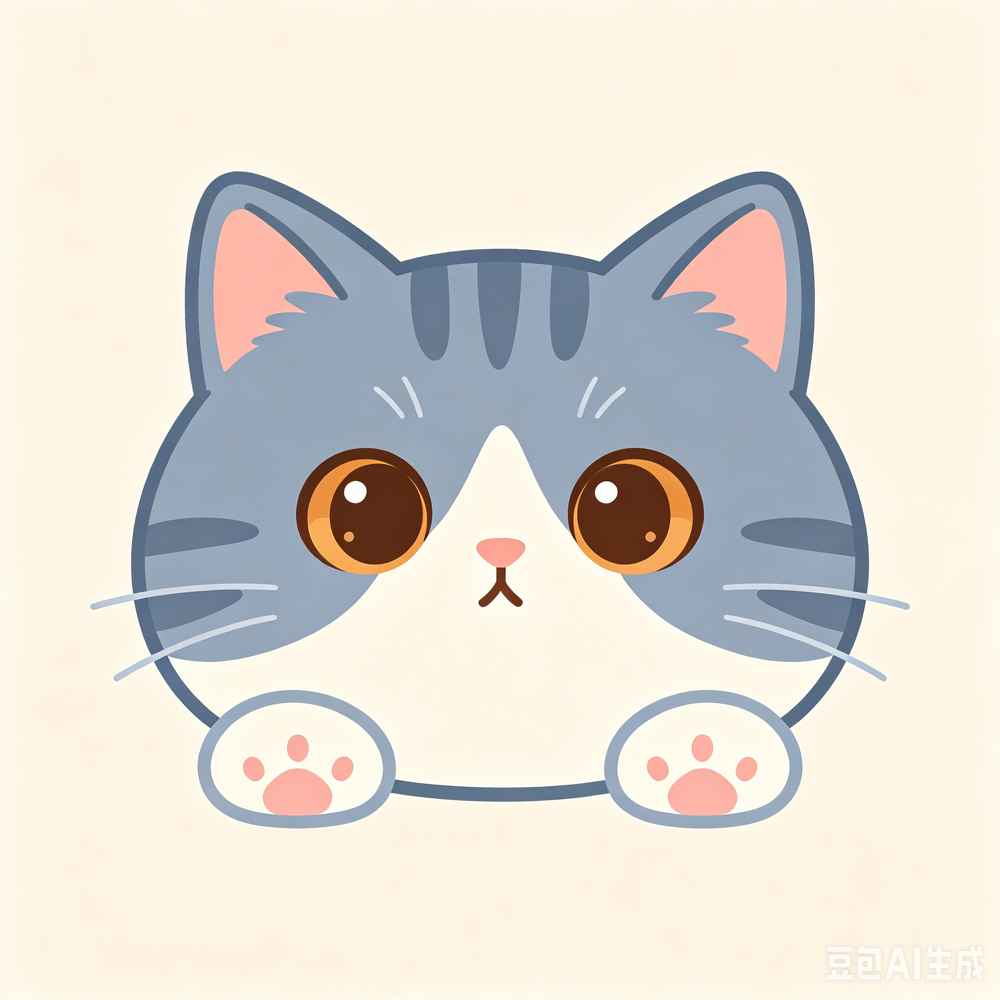

一个记录生活碎片、快乐灵感和无聊日常的地方。这里有音乐、有美食、有乱七八糟的奇思妙想。
一个普通人的普通自我介绍
喜欢在深夜听歌、周末研究新菜谱（虽然经常翻车）、
偶尔写点没人看的文字。养了一只叫「汤圆」的猫，
它的日常就是睡觉和嫌弃我。
人生信条：能躺着绝不坐着，但偶尔也会突然充满干劲地去爬山。
让我快乐的那些小事
经常尝试新菜谱，成功率大约六成。最近在挑战舒芙蕾，已经炸了三次厨房。
不追求通关，只享受过程。最爱种田模拟器和解谜游戏，竞技类请绕道。
从推理小说到哲学随笔都看，最近迷上了科普类。书架上一半没读完，但还在买新的。
喜欢漫无目的地在城市里走，发现巷子里的小店、墙上的涂鸦和不知名的小公园。
听歌没有固定风格，爵士、电子、民谣、后摇来者不拒。日推是我的人生导师。
和汤圆斗智斗勇是每天的必修课。它最爱把桌上的东西推下去，然后一脸无辜。
最近循环播放的歌，按心情排序
那些你可能不知道（也没必要知道）的事
偶尔记录下来的生活感悟
今天天气很好，适合什么都不做。于是我认真地什么都不做了一整天，结果竟然有点累。
做饭最重要的调料是「差不多就行了」。精确到克的菜谱不适用于我这种随性派。
汤圆今天又用尾巴扫了我的杯子。我觉得它是故意的，但我没有证据。
凌晨两点突然想通了一个困扰我很久的问题，第二天起来全忘了。人生就是这样。
下雨天和棉被是世界上最好的组合，没有之一。如果再加上一杯热可可，那就是天堂。
路过的那棵银杏树黄了，拍照的时候有个老奶奶也停下来拍，我们相视一笑。秋天真好。